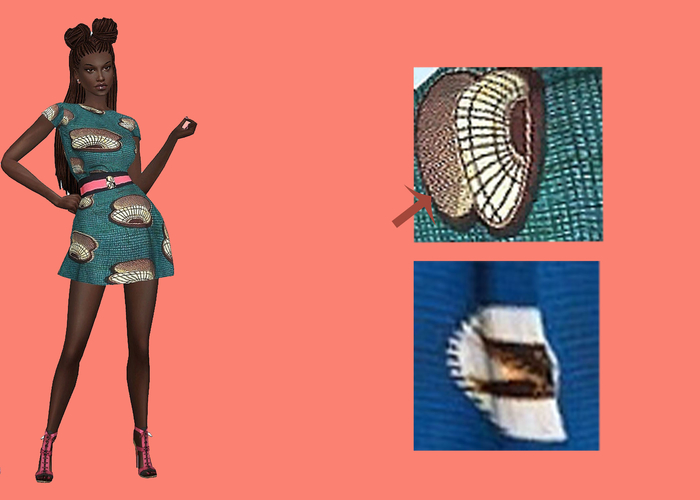

Code Fashionably
Sign In
Sign Up
×
Login
×
Model
Dress
Work
Communicate
×
Cancel
Done
×
Find Friends/Open Messages
Search for friends
Open Messages
Submit
×
Career
Learn
×
Pick a coding language
HTML
CSS
JAVA
Python
×

Reverse
Change
×
Pick a career
Software developer
Computer systems analyst
IT manager
Information security analyst
Database administrator
Web developer
Computer network architect
Computer systems administrator